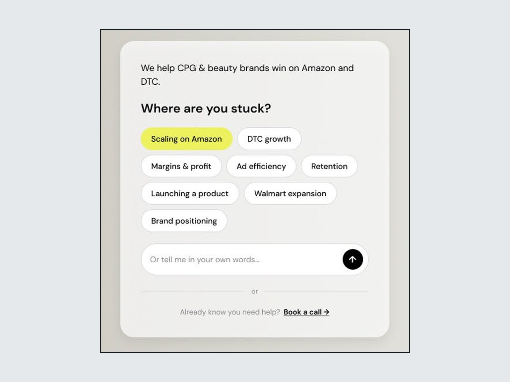

Years of Consultant Expertise Made Interactive
Parallel e-commerce agency, 2026
Lead product designer
I designed and shipped an AI chatbot that carries the agency founder's expertise to every website visitor, then redesigned it to serve e-commerce brands arriving with different needs.
Read case study: Years of Consultant Expertise Made Interactive